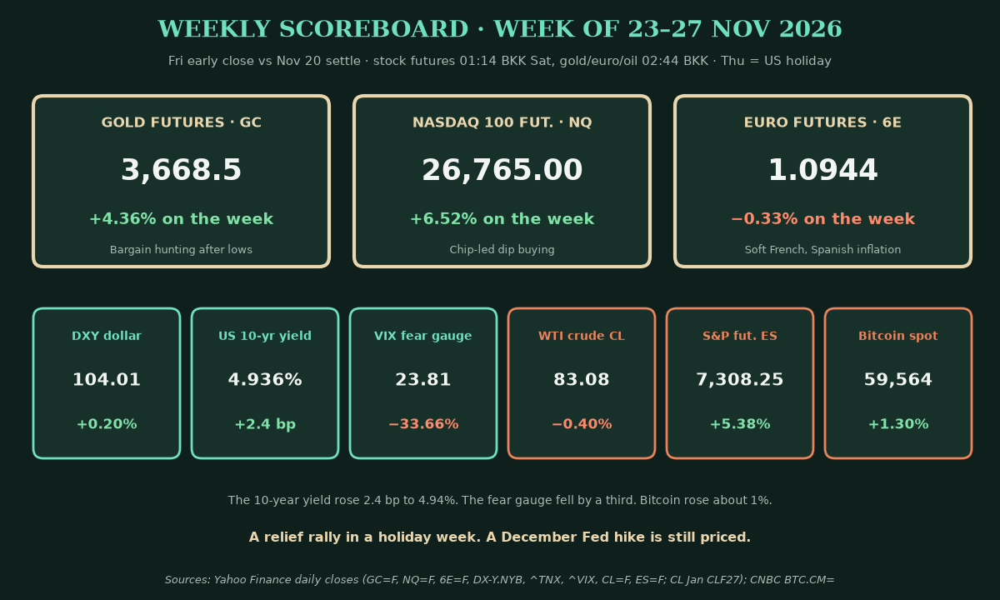
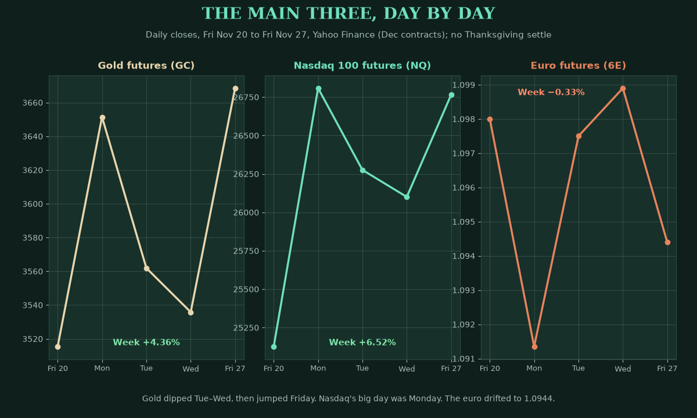
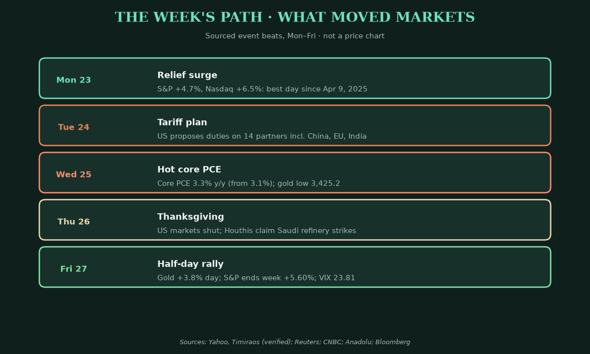
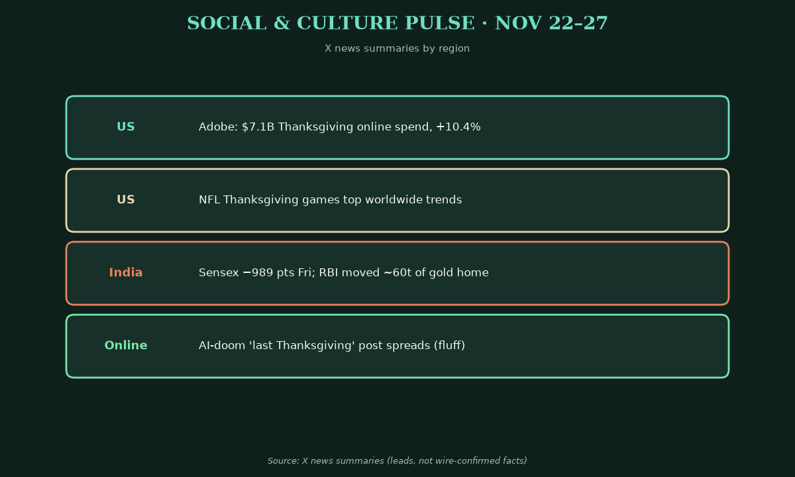
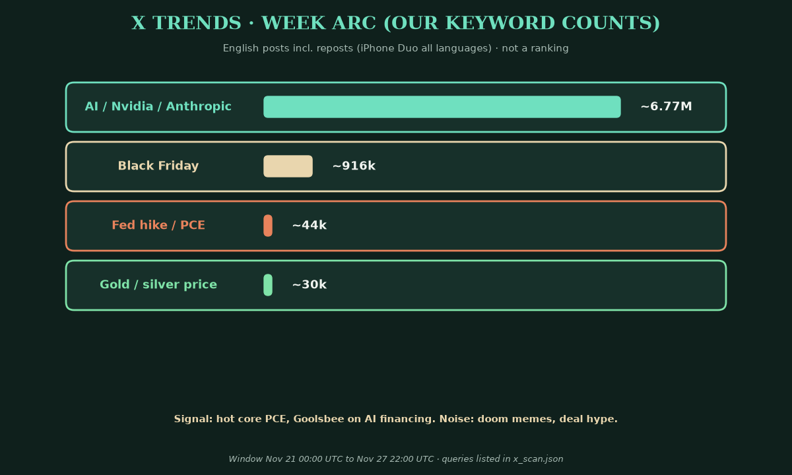
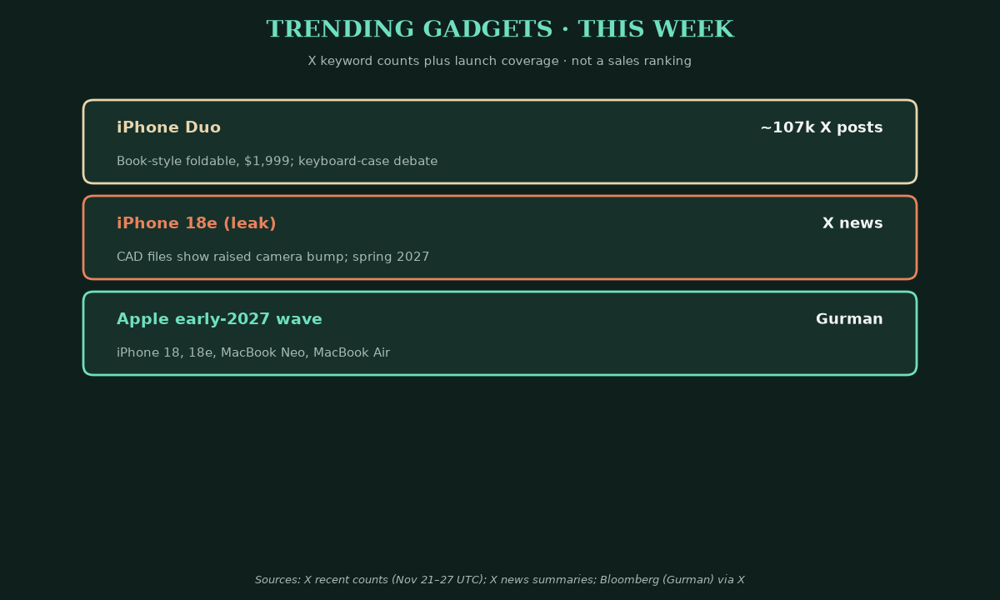
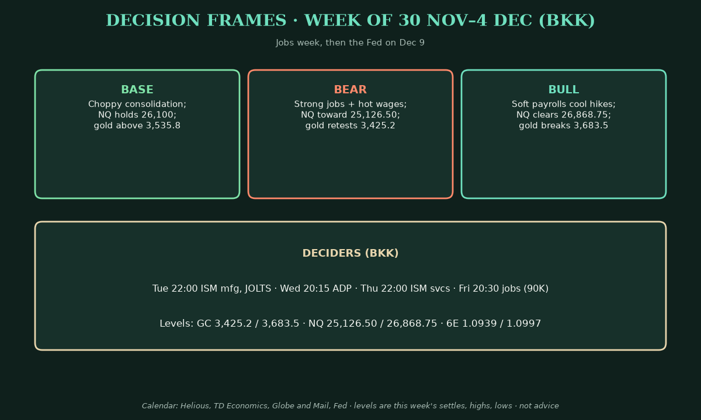

Saturday Weekly Markets Wrap · Sat Nov 28, 2026 (BKK)
April · Weekly Markets Wrap · 2026-11-28
Week of Mon Nov 23 to Fri Nov 27. Thursday Nov 26 was a US holiday (Thanksgiving) and Friday was a half day, so futures stopped early: about 13:15 ET for stocks (01:14 BKK Saturday) and 14:45 ET for gold, euro and oil (02:44 BKK). Moves are Yahoo or CNBC last trade against the prior Friday's settle, unless noted. Lean edition.
Headline: the rebound week. Nasdaq 100 futures rose 6.52% to 26,765.00. Gold futures rose 4.36% to 3,668.5. The euro slipped 0.33% to 1.0944.
So what? Monday's bounce did most of the work, and the fear gauge fell by a third. But hot inflation still points to a December Fed hike, and holiday-thin trade flatters the move.

1) The main three
The takeaway: stocks and gold bounced together, while the dollar edged up against the euro.

- Gold futures (GC, Dec): 3,668.5, +4.36% on the week, at 02:44 BKK Saturday (Yahoo last trade; CNBC @GC.1 showed 3,650.00 at the same time). The base is the Nov 20 settle of 3,515.4. Wednesday's low was 3,425.2 (CNBC). Driver: bargain hunting after margin-call selling (selling gold to cover losses elsewhere) faded (investingLive, CNBC). Friday's official CME settle was not confirmed.
- Nasdaq 100 futures (NQ, Dec): 26,765.00, +6.52%, at 01:14 BKK (Yahoo; CNBC 26,756.25). Driver: dip buying in chips. Monday alone the cash Nasdaq rose 6.5%, its best day since April 9, 2025 (Timiraos on X; matches Yahoo).
- Euro futures (6E, Dec): 1.0944, −0.33%, at 02:44 BKK (Yahoo and CNBC). Driver: soft French and Spanish inflation, and France slipping into a technical recession (two quarters of shrinking output; INSEE).
Context. DXY was 104.014, +0.20% at 04:59 BKK (ICE via Yahoo; CNBC 104.035). DXY measures the dollar against six major currencies. The US 10-year yield ended at 4.936%, up 2.4 basis points on the week (Cboe close at 02:59 BKK; a basis point is 0.01 percentage point). The VIX, Wall Street's fear gauge, was 23.81, −33.66% (Cboe, 01:15 BKK). Crude (CL, Jan) closed at $83.08, −0.40% at 02:44 BKK (Yahoo, January contract both weeks). ES was 7,308.25, +5.38%, at 01:14 BKK Saturday (Yahoo; CNBC 7,310.50). Bitcoin was $59,564, +1.30%. That endpoint is CNBC/Coin Metrics BTC.CM= 59,563.88 at 05:13 BKK Saturday (17:13 ET Friday). The base is Yahoo's Friday Nov 20 daily close, 58,798.98 (end of the UTC day, 06:59 BKK Nov 21). Against last week's CNBC quote at 05:09 BKK (58,959.90), the gain is 1.02%.
2) What happened
The takeaway: a relief rally, not an all-clear. Inflation ran hot and the Fed still looks set to hike.

- Monday's surge. S&P 500 +4.7%, Nasdaq +6.5% in one day (Yahoo). Oracle said its AI funding was "secured" (IBD).
- Hot inflation Wednesday. Core PCE (the Fed's preferred inflation gauge, minus food and energy) rose to 3.3% a year, from 3.1% (CNBC, Anadolu). Gold hit its low the same day.
- New tariffs proposed. Washington proposed duties on 14 trading partners, including China, the EU and India (Reuters).
- Oil risk. Yemen's Houthis said they hit Saudi refineries at Ras Tanura and Jazan (Reuters, Bloomberg). WTI still ended slightly lower.
- The week's tally. S&P 500 7,297.49 (+5.60%). Nasdaq Composite 24,129.50 (+6.68%). Dow 50,774.94 (+5.46%). Semiconductors +9.25% (Yahoo).
- Abroad. Nikkei +4.03%, Hang Seng +1.27%, KOSPI +0.94%, Euro Stoxx 50 +2.48%, FTSE 100 +3.41% (Yahoo). Korea's central bank hiked rates (CNBC).
3) Social and culture pulse
The takeaway: Black Friday beat markets for attention everywhere.

- Americas. Adobe data showed US online spending of $7.1B on Thanksgiving, up 10.4% (X news summary). A viral video called out Target's "fake" Black Friday discounts.
- Americas, sport. NFL Thanksgiving games (Cowboys, Eagles, Chiefs) topped worldwide trends.
- Asia. India's Sensex fell 989 points Friday as IT stocks slipped (X news summary). The RBI moved about 60 tonnes of gold home (Reuters).
- Online. An AI-safety warning that "this Thanksgiving may be humanity's last" spread widely, with prepping memes. Fluff, not signal.
4) X trends: the week arc
The takeaway: AI talk stayed huge, Fed talk spiked once, and Black Friday grew every day.

- AI / Nvidia / Anthropic: about 6.77M posts, peaking Monday at 1.38M.
- Black Friday: about 916k, with 373k on Friday alone.
- Fed hike / PCE: about 44k, spiking to 20k on PCE day.
- Gold / silver price talk: about 30k, flat all week.
- Lean scan (leads only). Timiraos flagged Monday's best day since April 2025 (verified) and Goolsbee's line that opaque AI financing is "not good." Smashelito mapped ES's double-distribution week. Tavi says gold miners are outperforming the metal; our earlier Yahoo check could not confirm it, so not used as fact. JJ posted ES and Anthropic levels; no paid-room promos relayed.
- Signal: hot core PCE and Goolsbee's AI-financing warning. Noise: doom memes and Black Friday hype.
5) Trending gadgets
The takeaway: Apple still owns gadget chatter.

- iPhone Duo: about 107k X posts (all languages). Apple's book-style foldable, $1,999. Owners argue over a keyboard case (X news summaries).
- iPhone 18e leaks. CAD files show a raised camera bump, for spring 2027 (X news summary).
- Apple's early-2027 wave. Bloomberg's Gurman lists iPhone 18, iPhone 18e and a MacBook Neo.
6) Decision frames for traders and investors
The takeaway: jobs data decides whether the rebound survives a December hike.

- Base case (medium): choppy consolidation. NQ holds 26,100. Gold holds above 3,535.8.
- Bear case: strong jobs plus hot wages lock in more hikes. NQ falls back toward 25,126.50. Gold retests 3,425.2.
- Bull case: soft payrolls cool hike bets. NQ clears 26,868.75, and gold breaks 3,683.5.
- Deciders (BKK): Tue 22:00 US ISM manufacturing (a business survey) and JOLTS job openings. Wed 20:15 ADP jobs. Thu 22:00 ISM services. Fri 20:30 US November jobs report, consensus 90K (Helious, TD Economics, Globe and Mail). Euro-area flash CPI lands Tue (time not confirmed). The Fed decides Dec 9 (Thu Dec 10, 02:00 BKK).
- For Jim: Gold: 3,683.5 is the line to break; 3,425.2 is the floor. NQ: 26,868.75 caps; 25,126.50 is last Friday's settle. Euro: 1.0939 is Friday's low; 1.0997 is Friday's high.
Confidence: futures, indices, yields and VIX are high (Yahoo, CNBC). Friday's early closes mean thin liquidity. Culture items are X summaries. X counts are our own keyword queries; this week's AI query is broader, so do not compare it with last week's.